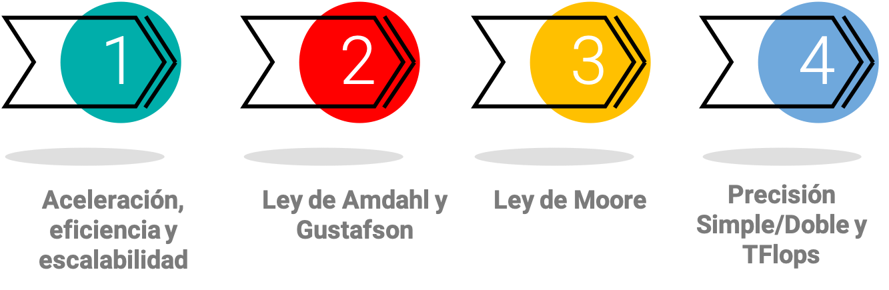
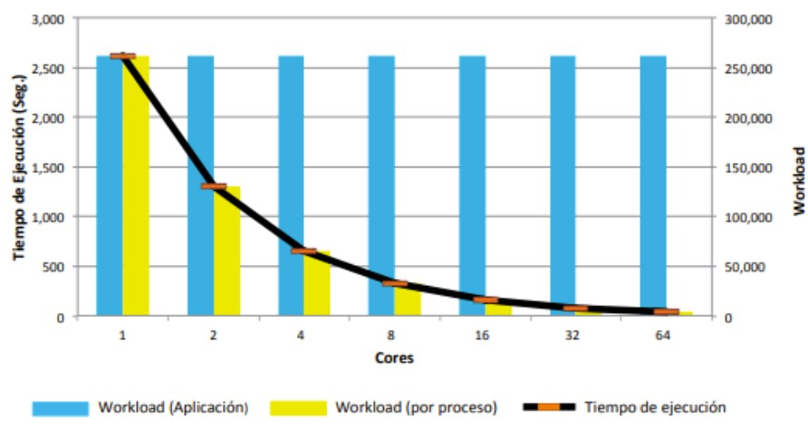
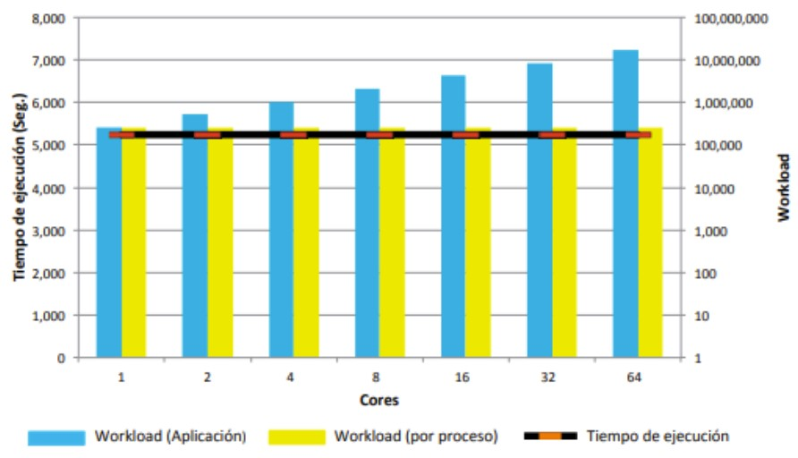
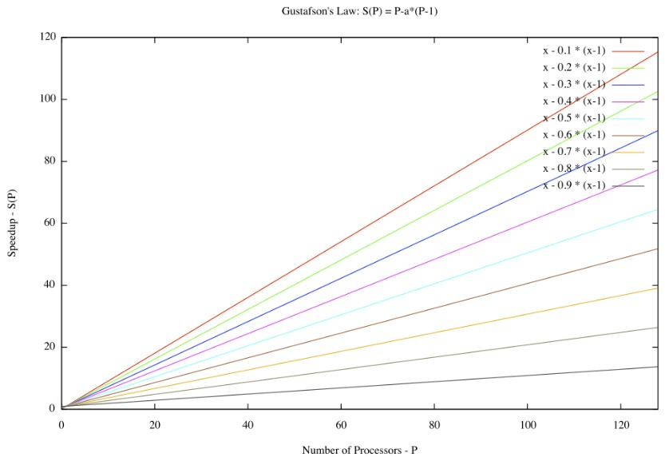
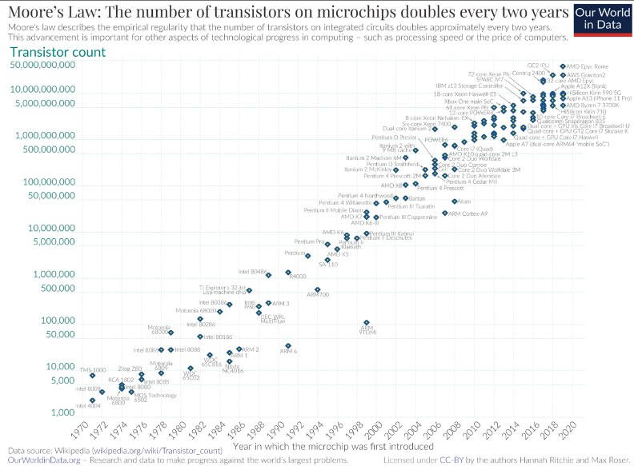
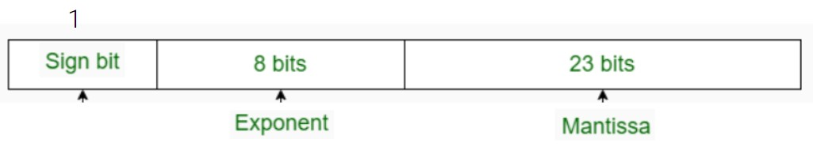
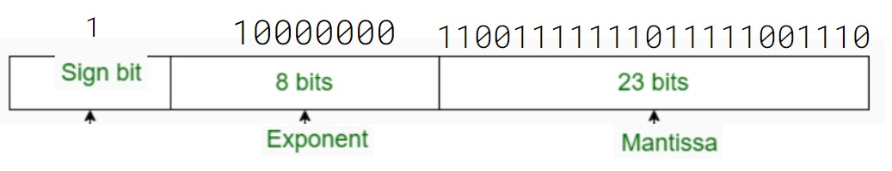
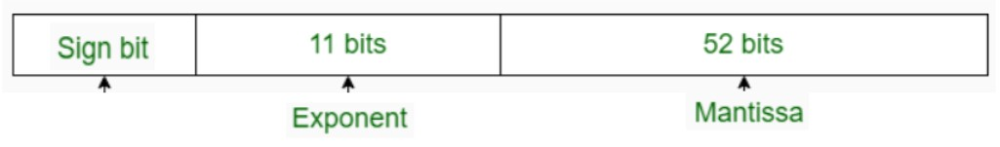

Unidad 3: Métricas de desempeño#
Contenido de la unidad#
Tiempo, aceleración, eficiencia y escalabilidad#
¿Cómo evaluar el desempeño de un programa paralelo?
Tiempo de ejecución#
Es el índice más básico. Se define como el intervalo de tiempo que transcurre desde el comienzo de la ejecución de la aplicación en el sistema paralelo hasta que el último proceso termina su ejecución.
Esta métrica es absoluta y permite medir el programa paralelo sin necesidad de compararlo con otro.
Aceleración#
La fórmula del Speed-Up se define como:
Donde:
\(T \cdot n\) representa el mejor tiempo de ejecución en modo secuencial.
\(T_p(N)\) representa el tiempo de ejecución en modo paralelo.
Aceleración
La aceleración varía de una máquina paralela a otra y en función de cómo se realice la paralelización.
Un mayor speedup es igual a más ganancia con la paralelización.
Eficiencia#
La eficiencia se calcula utilizando la siguiente fórmula:
Donde:
\(Eficiencia(p)\) es la eficiencia con \(p\) procesos. Con un valor entre 0 y 1. Su rendimiento puede verse afectado por el overhead.
\(Speed\_up(p)\) es el speed-up con \(p\) procesos.
\(p\) es la cantidad de procesos con los que se ejecuta la aplicación.
Eficiencia
Paralelización y Eficiencia:
Idealmente, se espera una eficiencia de 1 en la paralelización, lo que significa que se ha logrado una paralelización total.
En la práctica, no todo el programa puede ser paralelizado.
Overhead:
El overhead se refiere al costo adicional asociado con la administración de la comunicación y sincronización entre procesos en la programación paralela.
Puede limitar la escalabilidad de un algoritmo y afectar el rendimiento.
El overhead incluye factores como el tiempo de inicio y terminación de tareas, sincronización, comunicación de datos y sobrecarga de software (lenguajes paralelos, bibliotecas, sistema operativo, etc.).
Es importante minimizar el overhead siempre que sea posible para lograr un alto rendimiento y una buena escalabilidad.
Escalabilidad#
Capacidad de un algoritmo de mantener sus prestaciones cuando aumenta el número de procesos y/o el tamaño del problema (workload).
Escalabilidad
Esta característica nos permite evaluar el comportamiento del sistema cuando se incrementa el número de procesos y/o el tamaño del proceso (workload)
Suele indicar la capacidad de una aplicación paralela para utilizar de forma eficiente un incremento en los recursos computacionales.
Una aplicación escalable suele ser capaz de mantener su eficiencia constante cuando aumentamos el número de procesos incluso a base de aumentar el tamaño del problema (datos de entrada).
Si un algoritmo no es escalable, aunque se aumente el número de procesos, no se conseguirá incrementar la eficiencia, con lo cual no se saca provecho de los cores del sistema
Escalabilidad Fuerte
El workload es constante. El objetivo es disminuir el tiempo de ejecución de la aplicación aumentando el número de procesos.
Está fuertemente relacionada con la ley de Amdahl (se verá a continuación).
Escalabilidad Débil
Se aumenta el número de procesos de la aplicación manteniendo el tamaño del problema para cada proceso constante, consiguiendo que el tiempo sea constante.
Se desprende de las observaciones de la ley de Gustafson (se verá a continuación).
Ley de Amdahl y Ley de Gustafson#
Ley de Amdahl#
Evalúa la máxima eficiencia que un algoritmo paralelo puede lograr con respecto a su versión serie. La ecuación \(S_p(n)\) se define de la siguiente manera:
Donde:
\(S_p(n)\) es la eficiencia de ejecución con \(n\) procesadores.
\(f\) es el porcentaje de código no paralelizable (en decimales).
\(p\) es el número de procesadores.
Ley de Amdahl
Eficiencia y Proporción Paralelizable:
La eficiencia está ligada a la proporción paralelizable de un algoritmo.
No depende de la cantidad de procesos utilizados en el cálculo.
Ley de Amdahl:
Formulada por Gene Amdahl, esta ley establece que la mejora en el rendimiento de un sistema está limitada por el tiempo que se utiliza un componente específico.
Identificar y reducir la fracción de código no paralelizable es crucial para mejorar el rendimiento de sistemas paralelos.
Identificación de Cuellos de Botella:
El aumento del rendimiento en sistemas se relaciona con la identificación de los cuellos de botella.
Mejorar la fracción de código no paralelizable es clave para aumentar la eficiencia.
Valor de la Mejora:
La Ley de Amdahl ayuda a determinar si una mejora en el sistema es significativa o no.
Simplificación y Limitaciones:
Es un modelo simplificado de la realidad y no considera factores como el overhead de comunicación y sincronización.
A pesar de sus limitaciones, sigue siendo una herramienta valiosa para comprender el rendimiento y la escalabilidad.
Note
Importante revisar el Ejercicio de esta sección
Ley de Gustafson#
Establece que cualquier problema suficientemente grande puede ser eficientemente paralelizado, ofrece un nuevo punto de vista y así una visión positiva de las ventajas del procesamiento paralelo. La ecuación \(s\) se define de la siguiente manera:
Donde:
\(f\) es el porcentaje en decimales de la parte secuencial.
\(N\) es la cantidad de procesadores.
Ley de Gustafson
Gustafson consideraba que la ley de amdahl daba un límite para el descenso del tiempo de ejecución del algoritmo paralelo, dependiendo la fracción serie del algoritmo.
Sugiere que el tamaño del problema (N) aumenta a medida que se agregan más recursos, lo que significa que la fracción del código que no se puede paralelizar se vuelve menos importante. Por lo tanto, si se puede paralelizar una gran parte del código, la aceleración obtenida aumentará en consecuencia.
Ley de Moore y Ley de Huang#
Ley de Moore#
La Ley de Moore, formulada por Gordon Moore en 1965 como una predicción empírica inicialmente válida por 10 años, sigue siendo una tendencia notable en la tecnología.
Ley de Moore
Aunque no es una ley universal, ha sido utilizada para describir el crecimiento exponencial de la capacidad de procesamiento y almacenamiento en dispositivos electrónicos.
La idea central es que al aumentar la cantidad de transistores en un chip, se logra un incremento en la potencia y eficiencia de los dispositivos. Aunque inicialmente predijo un duplicado anual de transistores, en realidad se cumplió aproximadamente cada dos años.
Ley de Huang#
Sugiere que la velocidad de procesamiento puede aumentar proporcionalmente con el número de procesadores, pero solo hasta cierto punto.
No busca sustituir a la ley de Moore.
Cambio de paradigma en la computación. Buscan algoritmos que se sustenten en la paralelización de los datos. (La naturaleza del DL)
Ley de Huang
Es importante tener en cuenta la eficiencia límite al diseñar sistemas paralelos para garantizar que se utilicen los recursos adecuados y se logre el máximo rendimiento posible.
Precisión Simple Vs Precisión Doble y TFlops#
Enlaces de interés:
Tip
Diferencia entre precisión simple y precisión doble – Barcelona Geeks
Introducción a la Representación de Punto Flotante – Part 1 – Barcelona Geeks
A continuación encuentras una tabla comparando la precisión simple contra la precisión doble.
| PRECISIÓN SIMPLE | PRECISIÓN DOBLE |
|---|---|
| En precisión simple, se utilizan 32 bits para representar el número de coma flotante. | En doble precisión, se utilizan 64 bits para representar números de coma flotante. |
| Utiliza 8 bits para el exponente. | Utiliza 11 bits para exponente. |
| En precisión simple, se utilizan 23 bits para mantisa. | En doble precisión, se utilizan 52 bits para mantisa. |
| El número de sesgo es 127. | El número de sesgo es 1023. |
| Rango de números en precisión simple: 2-126 a 2+127. | Rango de números en doble precisión: 2-1022 a 2+1023. |
| Esto se usa cuando la precisión importa menos. | Esto se usa cuando la precisión es más importante. |
| Se utiliza para una amplia representación. | Se utiliza para la minimización de la aproximación. |
| Se utiliza en programas simples como juegos. | Se utiliza en programas complejos como calculadora científica. |
| Esto se llama binary32. | Esto se llama binary64. |
Conversión de números en punto flotante a binario: Precisión simple#
Algoritmo para convertir un número flotante a binario:
Se establece el bit del signo: negativo(1); positivo (0)
Convertir la parte entera a binario.
Convertir la parte fraccionaria (mantissa) de 23 bits
Escribir el número en notación científica
Reescribir el estándar IEEE754 32 bits
Vamos a convertir -3.6245 a binario en precisión simple:
1. El signo negativo se representa con un bit \(1_{(2)}\).
2. La parte entera es 3, que se representa \(11_{(2)}\) que se representa con 2 bits.
3. Convertimos parte fraccionaria: 0.6245 a binario
0.6245 x 2 = 1.2490 -> 1
0.2490 x 2 = 0.4980 -> 0
0.4980 x 2 = 0.9960 -> 0
0.9960 x 2 = 1.9920 -> 1
0.9920 x 2 = 1.9840 -> 1
0.9840 x 2 = 1.9680 -> 1
0.9680 x 2 = 1.9360 -> 1
0.9360 x 2 = 1.8720 -> 1
0.8720 x 2 = 1.7440 -> 1
0.7440 x 2 = 1.4880 -> 1 … Hasta tener 23 bits
R/ 1 0 0 1 1 1 1 1 1 1 0 1 1 1 1 1 0 0 1 1 1 0 1 \(_{(2)}\)
4. Convertimos el número a notación científica
5. Tomamos el exponente y le sumamos 127 del exceso
127 +1 = 128 = 10000000\(_{(2)}\)
Conversión de números en punto flotante a binario: Precisión doble#
Un nuevo ejercicio
Calcular la representación en precisión doble del mismo número (-3.6245) …
La entrega debe anexarse al final de la entrega del Ejercicio de esta sección.
Cálculo de Teraflops (TFlops)#
“FLOPS” es una abreviatura de “Floating Point Operations Per Second”, que se traduce como “Operaciones de Punto Flotante por Segundo”.
Esta medida representa de manera integral la potencia de procesamiento y la eficiencia de una máquina.
En términos simples, cuanto mayor sea el número de teraflops, mejor será el rendimiento de la máquina.
Para calcular los teraflops de una máquina, es necesario conocer tres factores clave: la velocidad de reloj de la CPU, la cantidad de núcleos de la CPU y la precisión de punto flotante que se utiliza.
FLOPS en unidades
Donde:
\(\text{Velocidad de reloj de la CPU}\): es la velocidad de reloj de la CPU en hertz (Hz).
\(\text{Número de núcleos de la CPU}\): es la cantidad de núcleos de procesamiento de la CPU.
\(\text{Cantidad de operaciones por ciclo de reloj}\): es la cantidad de operaciones de punto flotante que se pueden realizar en cada ciclo de reloj.
\(\text{Precisión de punto flotante}\): es la precisión de punto flotante que se utiliza, que puede ser de precisión simple (32 bits) o doble precisión (64 bits).
\(10^{12}\): es un factor de escala para convertir los resultados a teraflops.
Note
Ejemplo 1
Si una máquina tiene una velocidad de reloj de 3.5 GHz, 16 núcleos de procesamiento, 2 operaciones de punto flotante por ciclo de reloj y utiliza precisión doble, el cálculo de los teraflops sería?
Solución Ejemplo 1
TFLOPS = (3.5x10^9 x 16 x 2 x 64 bits) / 10^12 = 7.168 TFLOPS
Note
Ejemplo 2
Tres dispositivos tienen la misma frecuencia de reloj (2 GHz) y 4 núcleos de procesamiento cada uno. ¿Será que los dispositivos son igual de potentes?. Acá hay algunos datos para poder determinarlo…
Solución Ejemplo 2
Celular 2 GHz * 4 núcleos * 4 operaciones por ciclo * 64bits = 2.048 TFlops
Xbox 2 GHz * 4 núcleos * 6 operaciones por ciclo * 32 bits = 1.536 TFlops
Computador 2 GHz * 4 núcleos * 8 operaciones por ciclo * 64 bits = 4.096 Tflops